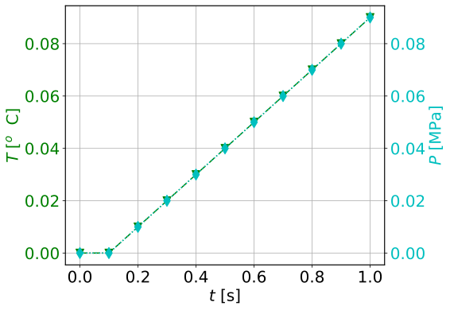
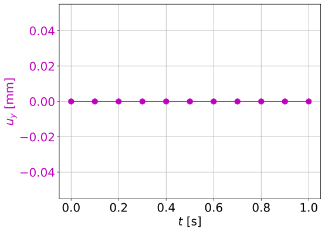
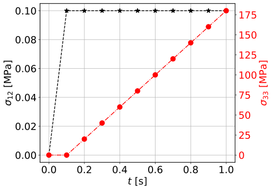

Cauchy THM couplings: Thermo- Hydro- Plasticity application¶
In this tutorial we will validate the complex behavior of our model when yielding occurs in the presense of THM couplings. Our model is a unit cube, that consists of four three dimentional tetrahedral elements. The base of the cube is fixed and its top facet is prescribed to move along the first dimension. The boundaries of the cube are considered to be insulated from its surroundings meaning that no flow of heat and pore fluid is allowed to take place. Under this configuration, when yielding takes place in our model the heat that will be produced due to dissipation will lead to an increase in the temperature of the cube and a subsequent increase of pore fluid pressure (thermal pressurization). We will study this phenomenon under a specific choice of material parameters so that we can validate the effect of each coupling in the behavior of the cube.
Begining of file¶
The file begins as follows:
from dolfin import *
from ngeoFE.feproblem import UserFEproblem, General_FEproblem_properties
from ngeoFE.fedefinitions import FEformulation
from ngeoFE.materials import UserMaterial
from ngeoFE_unittests import ngeo_parameters
from ngeoFE_unittests import plotting_params
import os # allows for easier handling of paths
from _operator import itemgetter # allows for transformation of lists to iterables, usefull for the definition of boundary conditions
Finite element formulation¶
For the implementation of the problem at hand the extra unknowns of the pressure and temperature fields need to be taken into account. We also need to include the values of pressure and temperature inside the material description so that the correct total and effective stresses are taken into account. Moreover, the existence of the coupled momentum, energy and mass balance partial differential equations (see previous tutorial), implies that the variational form of the problem needs to be modified in order to include the transient and coupling terms in the solution of the finite element problem. This procedure has been described in greater detail in the THM couplings implementation tutorial. The new Finite Element formulation is given as follows:
class THM3D_FEformulation(FEformulation):
'''
Defines a user FE formulation
'''
def __init__(self):
# Number of stress/deformation components
self.p_nstr=6+3+3
# Number of Gauss points
self.ns=1
# Number of auxiliary quantities at Gauss points
self.p_aux=2
def auxiliary_fields(self,v):
'''
Set user's generalized deformation vector
'''
auxgde=[
v[3],
v[4],
]
return as_vector(auxgde)
def generalized_epsilon(self,v):
'''
Set user's generalized deformation vector
'''
gde=[
Dx(v[0],0), #gamma_11
Dx(v[1],1), #gamma_22
Dx(v[2],2), #gamma_22
Dx(v[1],2)+Dx(v[2],1), #gamma_23
Dx(v[0],2)+Dx(v[2],0), #gamma_13
Dx(v[0],1)+Dx(v[1],0), #gamma_12
Dx(v[3],0), #q_1 - pf
Dx(v[3],1), #q_2 - pf
Dx(v[3],2), #q_3 - pf
Dx(v[4],0), #q_1 - temp
Dx(v[4],1), #q_2 - temp
Dx(v[4],2), #q_3 - temp
]
return as_vector(gde)
def create_element(self,cell):
"""
Set desired element
"""
self.degree=1
# Defines a Lagrangian FE of degree 1 for the displacements
element=VectorElement("Lagrange",cell,degree=self.degree,dim=3+1+1)
return element
def dotv_coeffs(self):
"""
Set left hand side derivative coefficients
"""
return as_vector([0.,0.,0.,1.,1.])
def setVarFormAdditionalTerms_Res(self,u,Du,v,svars,metadata,dt):
Res=0.
lstar=svars.sub(55-1)
bstar=svars.sub(56-1)
rhoC=svars.sub(57-1)
#HM terms
eps=self.generalized_epsilon(Du)
eps_v=eps[0]+eps[1]+eps[2]
virtual_pf=v[3]
Res+=-(1./bstar)*(1./dt)*dot(eps_v,virtual_pf)*dx(metadata=metadata)
#TM terms
virtual_Temp=v[4]
for i in range(1,6):
Res+= + (1./rhoC)*(1./dt)*svars.sub(1+i-1)*svars.sub(41+i-1)*virtual_Temp*dx(metadata=metadata)
#HT terms
DTemp=Du[4]
Res+= +(lstar/bstar)*(1./dt)*dot(DTemp,virtual_pf)*dx(metadata=metadata)
return Res
def setVarFormAdditionalTerms_Jac(self,u,Du,v,svars,metadata,dt,ddsdde):
lstar=svars.sub(55-1)
bstar=svars.sub(56-1)
rhoC=svars.sub(57-1)
alfa=svars.sub(58-1)
Jac=0.
#HM terms
eps=self.generalized_epsilon(u) #needs u (trial function, because it takes derivatives in terms of u and not Du for calculating the Jacobian.
eps_vol=eps[0]+eps[1]+eps[2]
virtual_pf=v[3]
Jac+=+(1./dt)*(1./bstar)*dot(eps_vol,virtual_pf)*dx(metadata=metadata)
#MH terms
pf=u[3] #same as before
virtual_eps=self.generalized_epsilon(v)
virtual_eps_vol=virtual_eps[0]+virtual_eps[1]+virtual_eps[2]
Jac+=-(1./dt)*dt*dot(pf,virtual_eps_vol)*dx(metadata=metadata)
#HT terms
temperature = u[4]
Jac+=-(1./dt)*(lstar/bstar)*dot(temperature,virtual_pf)*dx(metadata=metadata)
#MT terms due to thermal expansion
eps_temp=alfa*temperature*as_vector([1.,1.,1.,0.,0.,0.,0.,0.,0.,0.,0.,0.])
Jac+=-(1./dt)*dt*inner(dot(ddsdde,eps_temp),virtual_eps)*dx(metadata=metadata)
#TM terms due to thermal dissipation
virtual_temp=v[4]
eps_plastic=[]
for i in range(0,self.p_nstr):
eps_plastic.append(svars.sub(41-1+i))
eps_plastic=as_vector(eps_plastic)
Jac+=-(1./dt)*(1./rhoC)*inner(dot(ddsdde,eps),eps_plastic)*virtual_temp*dx(metadata=metadata)
#TM terms due to thermal expansion
Jac+=-(1./dt)*(1./rhoC)*inner(dot(ddsdde,eps_temp),eps_plastic)*virtual_temp*dx(metadata=metadata)
return Jac
Finite element problem description¶
We proceed now with building the main Finite element model, corresponding to shearing in 2D of a Cauchy elastoplastic layer with a Von Mises yield criterion and strain hardening. The finite element model is built inside a child class that inherits its methods from the parentclass UserFEproblem(). We will provide here commentary for each method used inside the childclass THM3D_FEproblem(UserFEproblem).
class THM3D_FEproblem(UserFEproblem):
def __init__(self,FEformulation):
self.description="Example of 1D plane strain problem, Cauchy continuum"
self.problem_step=0.
self.h = 1.
self.l = 1.
self.w = 1.
self.Normal_loading_total=-200.
self.Pressure_loading=66.66
self.Normal_loading_eff=self.Normal_loading_total+self.Pressure_loading
super().__init__(FEformulation)
In the class __init__() method, the finite element formulation defined above is provided as argument.The geometric dimensions of the problem are also specified
Its height self.h=1.0, its length self.l=1.0 and its width self.w=1.0 . The initialization then proceeds to set up all the methods of the parentclass UserFEproblem().
The methods inside the class are defined by overriding the methods inside the parent class.
def set_general_properties(self):
"""
Set here all the parameters of the problem, except material properties
"""
self.genprops=General_FEproblem_properties()
# Number of state variables
self.genprops.p_nsvars=62
This method is used to provide the number of state variables of the material. In this tutorial only the mechanical behavior is important and therefore, the state of material is described by the increment of stress, total strain, elastic strain, plastic strain, plastic strain multiplier and plastic strain rate. Notice that even though the problem is in 2D and three strain components (and consequently three stress components) are needed for the description of equilibrium the state of the material contains the information also for the rest components of the general 3D problem. For each material used by the Numerical Geolab, the number of state variable components is given in the corresponding material table.
Next we continue by generating the mesh for the problem at hand. Here, we model a 3D Cauchy unit cube.
For this simple geometry the capabilities of the dolfin.cpp.mesh module can be used to define
a cube consisting of 4 tetrahedral elements by specifying the bottom left and upper right corners of the cubic domain.
def create_mesh(self):
"""
Set mesh and subdomains
"""
self.nx=1
self.ny=1
self.nz=1
mesh=BoxMesh(Point(-0.5*self.l,-0.5*self.w,-0.5*self.h),Point(0.5*self.l,0.5*self.w,0.5*self.h),self.nx,self.ny,self.nz)
cd = MeshFunction("size_t", mesh, mesh.topology().dim())
fd = MeshFunction("size_t", mesh, mesh.topology().dim()-1)
return mesh, cd, fd
For the domain at hand we specify a discretization with nx=1 element along the x[0] component, ny=1 element along the x[1]
component and nz=1 element along the x[2] component. The dolfin.cpp.mesh.MeshFunction method of dolfin is used to
provide the mesh object, the interior domain and the boundary domains. The following model is the produced:
{kind=link}
We next assign values to the regions of the mesh defined by different material properties.
def create_subdomains(self,mesh):
"""
Create subdomains by marking regions
"""
subdomains = MeshFunction("size_t", mesh, mesh.topology().dim())
subdomains.set_all(0) #assigns material/props number 0 everywhere
return subdomains
In this tutorial all the domain is defined by the same material properties and therfore the value 0 will be assigned everywhere inside the mesh. This value is a number indicating which material parameters need to be taken into account in each mesh region (see the corresponding method `set_material_params()`_).
IMPORTANT NOTE
We need also to initialize the Gauss point monitoring subdomain, when state variable output is needed. We use the same method as in the case of material definition based onthe FEniCs software:
Monitoring stress and state variables at the Gauss points¶
class Gauss_point_Querry(SubDomain):
def __init__(self):
super().__init__()
def inside(self, x, on_boundary):
return between(x[0], (-0.5,0.5)) and between(x[1], (-0.5,0.5)) and between(x[2], (-0.5,0.5))
def create_Gauss_point_querry_domain(self,mesh):
"""
Create subdomains by marking regions
"""
GaussDomain = MeshFunction("size_t", mesh, mesh.topology().dim())
GaussDomain.set_all(0) #assigns material/props number 0 everywhere
GaussDomainQuerry= self.Gauss_point_Querry()
GaussDomainQuerry.mark(GaussDomain,1)
return GaussDomain
We note here that the Gauss point definition is done on the cells of the Finite Element mesh and not on the boundary facets. This is done because the Gauss points are on the
interior of the domain and use of the nodal selection algorithm inside the Numerical Geolab module ngeoFE.feproblem (see method ngeoFE.feproblem.UserFEobject.set_history_output_indices())
returns an empty set. The method ngeoFE.feproblem.UserFEobject.set_svars_history_output_indices() needs to be called -internally- instead.
Boundary identification¶
We proceed now by identifying the boundaries needed for the application of the boundary conditions at a later stage of the modeling procedure.
We make use of the dolfin.cpp.mesh.SubDomain parent class inside dolfin:
-
class
dolfin.cpp.mesh.SuDomain¶
We create a child class that will handle the assignment of different labels at the different faces of the unit cube. We implement this by
modifying the dolfin.cpp.mesh.SubDomain.inside() method of the parent class.
-
dolfin.cpp.mesh.SuDomain.inside()¶
class Boundary(SubDomain):
def __init__(self,xyz,param):
self.xyz=xyz
self.param=param
super().__init__()
def inside(self, x, on_boundary):
tol = DOLFIN_EPS
return on_boundary and near(x[self.xyz],self.param)
Inside the Boundary subclass we define the logical test for assigning the specific boundary node in one of the boundary regions, where the boundary conditions will be applied.
The value x[i] indicates the spatial coordinate \(x_i\) of the problem at hand. We continue by marking the boundaries of the model based on the classes defined during the boundary identification phase (see section Boundary identification above).
We do so by assigning the numbers 1 to 6 to the different boundary facets of the model. To do this we use the method mark() from the SubDomain class of
:xref:`dolfin`.
def mark_boundaries(self, boundaries):
"""
Mark left and right boundary points
"""
top0 = self.Boundary(2,self.h3/2.)
top0.mark(boundaries, 1)
bottom0 = self.Boundary(2,-self.h3/2.)
bottom0.mark(boundaries, 2)
#
left0 = self.Boundary(0,-self.h1/2.)
left0.mark(boundaries, 3)
right0 = self.Boundary(0,self.h1/2.)
right0.mark(boundaries, 4)
#
back0 = self.Boundary(1,-self.h2/2.)
back0.mark(boundaries, 5)
front0 = self.Boundary(1,self.h2/2.)
front0.mark(boundaries, 6)
Assigning boundary conditions¶
We are now able to identify the boundaries of the mesh and assign different boundary condition to each side of the boundary. The way we apply the boundary conditions can be seen in the method set_bcs():
def set_bcs(self):
"""
Set boundary conditions for the user problem / could be replaced by external mesher, e.g. Abaqus, Gmsh...
"""
#top
[1, [0, [1], 0.]],
[1, [0, [0], -1.]],
[1, [0, [2], 0.]],
[1, [1, [3], 0. ]], #undrained
[1, [1, [4], 0.]], #adiabatic
#bottom
[2, [0, [0], 0.]],
[2, [0, [1], 0.]],
[2, [0, [2], 0]],
[2, [1, [3], 0. ]], #undrained
[2, [1, [4], 0.]], #adiabatic
return bcs
Inside this method the boundaries are assigned with the use of a nested list. Dirichlet, Neuman and Robin boundary conditions can be applied both incrementaly and instantaneously. The boundary conditions can be assigned to a boundary region or pointwise.
In this example, the region id ranges from 1 to 2 indicating the top and bottom regions of the boundary respectively. For the displacement components of the vectorspace ([0],[1],[2]), the type of bc is set to 0, specifying incremental Dirichlet boundary conditions. For the pore fluid pressure and temperature components of the vectorspace ([3],[4]) the type of boundary condition is set to 1 indicating that Neuman conditions that specify the spatial derivative of the particular vector field components need to be appied. Here, we set the normal displacement component [2].
History output specification¶
Numerical Geolab offers the user the capability of extracting the output at the converged increments of the numerical analysis at specific Gauss points and nodes of the numerical model. This capability is given to the user in order to obtain the exact nodal output of the solution (forces, displacements) and the corresponding state variables output at the Gauss points, instead of using the interpolated results provided in a separate .vtk file for postprocessing with a third party software (e.g. Paraview).
Assigning the nodal history output¶
The history output at the nodes can be given by:
def history_output(self):
"""
Used to get output of residual at selected node
"""
hist=[[1,[1,[0]]],
[1,[0,[0]]],
[1,[1,[1]]],
[1,[0,[1]]],
[1,[1,[2]]],
[1,[0,[2]]],
[1,[1,[3]]],
[1,[0,[3]]],
[1,[1,[4]]],
[1,[0,[4]]]
]
return hist
The node specification works the same way as in set_bcs(). In this example we choose the top facet of the boundary (1) in order to monitor the all the vector components ([0],[1],[2],[3],[4]) of the force (1) and displacements (0) fields.
Assigning the state variable history output at the Gauss points¶
We assign next the components of the state variables that need to be monitored at the specific Gauss points:
def history_svars_output(self):
"""
Used to get output of svars at selected Gauss point
"""
hist_svars=[[1,[1,[0]]], #sigma_11
[1,[1,[1]]], #sigma_22
[1,[1,[2]]], #sigma_33
[1,[1,[3]]], #sigma_23
[1,[1,[4]]], #sigma_13
[1,[1,[5]]], #sigma_12
[1,[1,[40]]], #dep_11
[1,[1,[41]]], #dep_22
[1,[1,[42]]], #dep_33
[1,[1,[43]]], #dep_23
[1,[1,[44]]], #dep_13
[1,[1,[45]]], #dep_12
[1,[1,[58]]], #Pressure
[1,[1,[59]]], #Tempretature
[1,[1,[12]]], #epsilon_11
[1,[1,[13]]], #epsilon_22
[1,[1,[14]]]] #epsilon_33
return hist_svars
The Gauss point specification works the same way as in set_bcs() and history_output(). In this example in the region (1) defined by the
method create_Gauss_point_querry_domain
, we choose to monitor the above vector components, which translate to the stresses, increments of plastic strain pressure, temperature and normal total strains respectively.
The mapping between the vector components of the Function space and the state variable components is given in the corresponding material table.
Material specification¶
Next, we define the analysis material that we have already assigned in the create_subdomains() method.
def set_materials(self):
"""
Create material objects and set material parameters
"""
mats=[]
# load material #1
env_lib=ngeo_parameters.env_lib
umat_lib_path= ngeo_parameters.umat_lib_path
umat_lib = umat_lib_path+'/CAUCHY3D-DP/libplast_Cauchy3D-DP-PR-TEMP.so'
umat_id=3 # if many materials exist in the same library
mat=UserMaterial(env_lib,umat_lib,umat_id)
mat.props=self.set_material_1_properties(2000.,0.,100.,0.,1.)
#
mats.append(mat)
return mats
The ngeo_parameters.py module contains the relative path to the materials libraries, which specify the different materials available to the user. The variable umat_id=3 needs to be set for the 3D analyses performed here. It specifies the mapping of the updated vector components of the strain increment \((\gamma_{11},\gamma_{22},\gamma_{33},\gamma_{23},\gamma_{13},\gamma_{12})\) and the corresponding tensor components of the constitutive matrix, with their position in the 3D strain vector and 3D constitutive matrix provided at the material soubroutine (material algorithm). This mapping returns back the correct components of the stress vector and constitutive matrix to pass into the residual calculation of the weak form in dolfin (equilibrium iterations). The material properties passed into the material algorithm, are set with the helper method:
def set_material_1_properties(self):
"""
Sets material parameters
"""
EE=2000.;nu=0. ;cc=0.1 ;tanfi=0.;tanpsi=0.;Hsfi=0.;Hscc=0.
GG=EE/(2.*(1.+nu))
KK=EE*GG/(3.*(3.*GG-EE))
chi=1.0 #permeability;
eta_f=1.0 #fluid_viscosity
lstar=10.**8 #thermal expansivity of mixture
bstar=10.**8 #hydraulic expansivity of mixture
alpha=1. #thermal expansion coefficient
kT=1./1. #conductivity
rhoC=1. #density * specific heat capacity
props=np.array([KK,GG,chi,eta_f,bstar,kT,rhoC,alpha,lstar,0.,tanfi,cc,tanpsi,Hsfi,Hscc,0.,0.,0.,0.,0.])
props=props.astype("double")
return props
The material used in this application is an elastic perfectly plastic that follows the Von Mises yield criterion \(\phi=0\)
with associative flow rule \(\psi=0\). We specify the material’s elastic parameters using the material young modulus \(EE=2000\;\text{MPa}\) and
Poisson ratio \(\nu=0\). The parameters passed into the material soubroutine are the 3D isotropic compression modulus KK and the shear modulus
GG. Therefore, a transformation of the elastic constants is needed. The material constants ( GG, KK, chi, eta_f, lstar, bstar, alpha,
kT, rhoC ), and their position in the material properties (numpy array props), can be found in the
Material description of state variables and the material library files that accompany Numerical Geolab.
We intent to verify that our analysis indeed predicts the correct relations between the dissipation and the temperature increase and subsequently between the temperature increase and the pore fluid pressure increase. To do so we will set a minimum value pf yield strength, so that our material yields after the first increment and we will set the specific heat \(=1\frac{^\text{o}\text{C}}{\text{J}}\) and thermal pressurization constant \(\Lambda=\frac{\lambda^\star}{\beta^\star}=1\). We set the themal expansion coefficient \(=1\text{[}{^{\text{o}}\text{C}}^{-1}\text{]}\) so that w can measure the changes in the mechanical stress components of the confined cube. In order to avoid pore fluid pressure pressure reduction due to the expansion of the material volume due to heating we will set the hydraulic expansivity of the medium \(\beta^\star=1\;\text{[MPa}^{-1}\text{]}\).
Analysis excecution and postprocessing¶
Our model is now set and ready to run. In this application we will test the effect of the THM couplings in the post yielding
behavior of the material. We will create a model derived by the class THM3D_FEproblem.
We will study the problem of a confined unit cube compised of four tetrahedral elements. This problem indicates that the diffusion terms of temperature and pressure are negligible
. The full problem description script can be found here.
The reulta sre presented in Figure 1, Figure 2
Controling the analysis time¶
The following code block provides the solver parameters inclusing the step total analysis time, the maximum time increment, the tolerance of the converged increment and the maximum number of increments.
The parameter scale_t controls the overall time increment and total time of the analysis. We specify it as an attribute of the
class so that it can be called by the other analysis procedure method. To avoid confusion with the problem description we choose not to incorporate it as an
argument to be passed at the level of the problem definition. Next, the main part of the analysis follows.
This method specifies the boundary conditions to be applied at each step of the analysis and the total time of eaxh analysis step.
In this application only one analysis step is run. The maximum number of increments for each step is set to ninc=100000.
Postprocessing the results¶
The following functions will help with unpacking the nodal solution and the state variables output at the Gauss points.
def history_unpack(self,list1):
for i,elem in enumerate(list1):
if i==0:
self.array_time=np.array([[elem[0]]])
self.array_gen_force=elem[1].reshape((1,len(elem[1])))
self.array_gen_disp=elem[2].reshape((1,len(elem[2])))
continue
self.array_time=np.concatenate((self.array_time.copy(),np.array([[elem[0]]])))
self.array_gen_force=np.concatenate((self.array_gen_force.copy(),elem[1].reshape((1,len(elem[1])))))
self.array_gen_disp=np.concatenate((self.array_gen_disp.copy(),elem[2].reshape((1,len(elem[2])))))
return
def svars_history_unpack(self,list1):
for i,elem in enumerate(list1):
if i==0:
self.array_dtime=np.array([[elem[0]]])
self.array_gp_svars_comp=elem[1].reshape((1,len(elem[1])))
continue
self.array_dtime=np.concatenate((self.array_dtime.copy(),np.array([[elem[0]]])))
self.array_gp_svars_comp=np.concatenate((self.array_gp_svars_comp.copy(),elem[1].reshape((1,len(elem[1])))))
The following functions allow us to extract the generalized force displacement vectors and the state variables at the Gauss points into postprocessing atributes to be used by the user’s postprocessing algorithms.
def extract_generalized_force_disp(self):
analysis_history=self.feobj.problem_history
self.history_unpack(analysis_history)
self.array_time=self.array_time[:].copy()
self.array_gen_force=self.array_gen_force[:,:]#.reshape((-1,20))
self.array_gen_disp=self.array_gen_disp[:,:]#.reshape((-1,20)).copy()
return
def extract_elastoplastic_matrix(self):
self.array_gen_dforce=self.array_gen_force[1:]-self.array_gen_force[:-1]
self.array_gen_ddisp=self.array_gen_disp[1:]-self.array_gen_disp[:-1]
self.EH=np.divide(self.array_gen_dforce[:],self.array_gen_ddisp[:])
return
def extract_svars_gauss_point(self):
analysis_svars_history=self.feobj.problem_svars_history
self.svars_history_unpack(analysis_svars_history)
self.array_dtime=self.array_dtime[:].copy()
self.array_gp_svars_comp=self.array_gp_svars_comp[:].copy()
print(self.array_gp_svars_comp.shape)
Excecuting the analysis¶
The following set of commands initializes the finite element formulation, the finite element problem and runs the analysis.
my_FEformulation=THM3D_FEformulation()
my_FEproblem1=THM3D_FEproblem(cls.my_FEformulation)
my_FEproblem1.give_me_solver_params(scale_t=1.)
converged1=my_FEproblem1.run_analysis_procedure(reference_data_path
Plotting the analysis values¶
We will take advantage of the plotting capabilities of Numerical Geolab available in ngeoFE_unittests.plotting_params.
We will plot the pressure \(P\) and temperature \(T\) values w.r.t. time in the left part of
in Figure in Figure 1:
x1=list(values_time1[:].copy())
y1=list(values_gen_disp1[:,-1].copy())
x1.insert(0,0)
y1.insert(0,0)
x2=list(values_time1[:].copy())
y2=list(values_gen_disp1[:,-6].copy())
x2.insert(0,0)
y2.insert(0,0)
fig, ax1, ax2, color1, color2 = plotting_params.object_plot_axes('$t$ [s]', y1_txt='$T\; $[$^o$ C]',color1='',y2_txt='$P$ [MPa]',color2='', title='',mode='2')
plotting_params.object_plot(x1, y1, y2, ax1, ax2, mode='2',color1=color1,color2=color2,label_string='')
plotting_params.show_plot()
plotting_params.plot_legends(ngeo_parameters.reference_data_path, fig, filename='Cauchy_3D_Thermo_Hydro_plasticity_T_P',mode='1')
We can plot the vertical displacement w.r.t. time in Figure in Figure 1, in order to check the degree of confinement:
x1=list(values_time1[:].copy())
y1=list(values_gen_disp1[:,4].copy())
x1.insert(0,0)
y1.insert(0,0)
fig, ax1, color1 = plotting_params.object_plot_axes('$t$ [s]', y1_txt='$u_y$ [mm]',color1='',y2_txt='',color2='', title='',mode='1')
plotting_params.object_plot(x1, y1, 'y2', ax1, 'ax2', mode='1',color1=color1,color2='',label_string='')
plotting_params.show_plot()
plotting_params.plot_legends(ngeo_parameters.reference_data_path, fig, filename='Cauchy_3D_Thermo_Hydro_plasticity_u_y',mode='1')

Temperature and Pressure diagrams (\(T\;\left[^\text{o}\text{C}\right]\), \(\left[\text{MPa}\right]\), time \(t\left[\text{s}\right]\)) The temperature and pressure show the same increase. |

The vertical displacements (\(u_y\;\left[mm\right]\)) with respect to time, showing that the vertical displacement remains zero, which implies a pore fluid pressure \(P\;\left[MPa\right]\) and normal vertical stress \(\sigma_{22}\;\left[MPa\right]\). |
{kind=link}
{kind=link}
We next plot the values of shear stress \(\sigma_{12}\) and normal vertical stress \(\sigma_{22}\) w.r.t. to time, in the left part of Figure 2. In the right part of Figure Figure 2 we plot the values of pressure \(\Delta P\) and temperature \(\Delta T\) increment w.r.t. time.

The value of the shear stress \(\sigma_{12}\;\left[MPa\right]\),
which is the only component present in the yield criterion, stays constant
equal the value of the parameter |
{kind=link}
{kind=link}